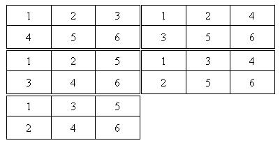

HDU4828. Grids
内存限制：10000/5000 MS (Java/Others)
时间限制：65535/65535 K (Java/Others)
题目描述
度度熊最近很喜欢玩游戏。这一天他在纸上画了一个2行N列的长方形格子。他想把1到2N这些数依次放进去，但是为了使格子看起来优美，他想找到使每行每列都递增的方案。不过画了很久，他发现方案数实在是太多了。度度熊想知道，有多少种放数字的方法能满足上面的条件？
输入格式
第一行为数据组数T(1<=T<=100000)。
然后T行，每行为一个数N(1<=N<=1000000)表示长方形的大小。
输出格式
对于每组数据，输出符合题意的方案数。由于数字可能非常大，你只需要把最后的结果对1000000007取模即可。
样例
样例输入
2 1 3
样例输出
Case #1: 1 Case #2: 5
Hint
对于第二组样例，共5种方案，具体方案为：

数据范围与提示
2014年百度之星程序设计大赛 - 初赛（第一轮）